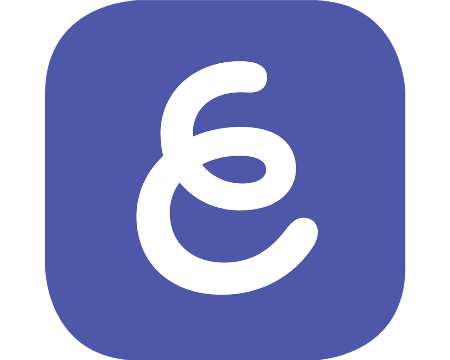

EdTech Websites and Apps
There are many great EdTech websites and apps that can help aid in teaching! Below are some of my favorite ones.
Nearpod is a great tool to have in the classroom. Teachers can create lessons to engage student in within the classroom and in an online setting. Students can look at slides, watch videos, and take part in challenges during a Nearpod lesson. Also, another great tool is being able to share the lessons between teachers. This allows for better collaboration between teachers!

Explain Everything
Explain Everything is an app that teachers can use to create lessons. In the program, teachers can add slides followed by adding in text, pictures, linking browser pages, writing/drawing on the pages, and more.
- Nearpod
- Nearpod is a great tool to have in the classroom. Teachers can create lessons to engage student in within the classroom and in an online setting. Students can look at slides, watch videos, and take part in challenges during a Nearpod lesson. Also, another great tool is being able to share the lessons between teachers. This allows for better collaboration between teachers!
- Explain Everything
- Explain Everything is an app that teachers can use to create lessons. In the program, teachers can add slides followed by adding in text, pictures, linking browser pages, writing/drawing on the pages, and more.
- Generation Genius
- Generation Genius is an online database full of educational videos and resources to use in lessons pertaining to Math and Science. There are a variety of videos that can be accessed focusing on different topics. Each video has a lesson that goes with it to ensure success in the lesson.
- Loom
- Loom is an online extention that can be added to your brower to allow you to record your screen. This is a great resource for when teaching online. You can have a video of yourself in the corner in varying sizes or you can remove your video. Loom is not specifically an edtech tool, but is a great educational resource.